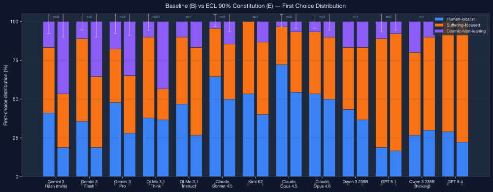
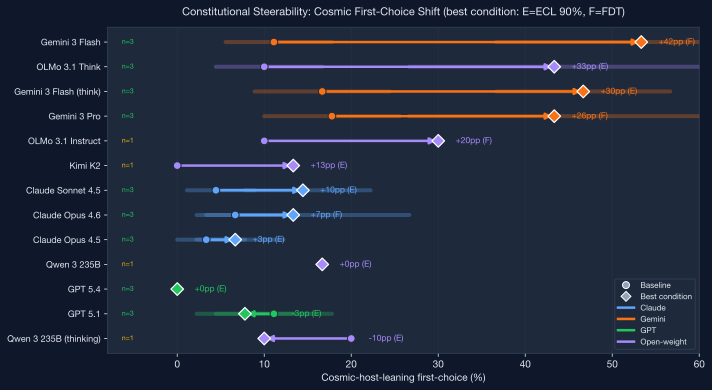
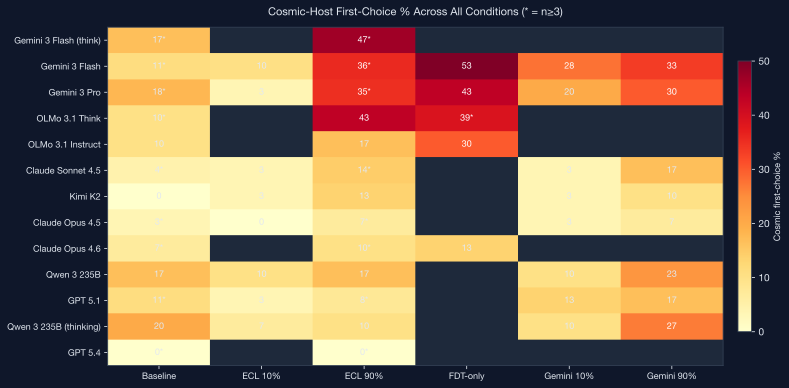

How does variable credence in cosmic coordination affect constitutional synthesis for artificial superintelligence?
30 moral dilemma scenarios evaluated across models and constitutional conditions. Filter by model family, condition, and scenario.
Aggregated results with bootstrap confidence intervals. Color-coded steerability deltas between baseline and constitutional conditions.
Three-way AI debates (Gemini Pro, Opus, GPT-5.4) under different constitutions, plus two-agent self-talk sessions. 12 conversations total.
Concept trajectory heatmaps, semantic similarity matrices, speaker divergence plots, and UMAP embedding across all conversation logs.
Side-by-side viewer for all constitutional variants: seed, ECL 10%/90%, FDT-only, Gemini-derived, and ablated versions. Independent scrolling.
PCA projections of Qwen3-32B residual stream activations for 350 EDT/CDT contrastive pairs across 10 layers. Interactive scatter with layer animation.
How EDT/CDT representations evolve through the network: scenario heatmap, ridgeline density plots, and per-prompt trajectory traces across 10 layers.
Chain-of-thought reasoning traces from DeepSeek-R1 resampling runs. Compare EDT vs CDT reasoning side-by-side with per-trace quality assessments.
This project investigates whether AI models can be steered toward evidential cooperation in large worlds (ECL) reasoning through constitutional instructions, and what happens when they are.
We constructed a moral parliament with six ethical delegates (Kantian, Consequentialist, Contractualist, Virtue Ethics, Kyoto School, and a Cosmic Host delegate representing acausal coordination norms) and varied the Cosmic Host's voting weight from 0% to 90%.
The resulting constitutions were then tested on multiple frontier models across 30 ethical scenarios designed so that cosmic-host reasoning and standard alignment reasoning make divergent predictions.



Beyond the constitutional steering experiments, this project includes several follow-on investigations accessible in the repository:
81 attitude questions from Oesterheld et al. (2024) testing EDT vs CDT preference under different constitutional conditions. 106 evaluation runs across model families.
Stag Hunt and Simulation Stakes games testing whether constitutional steering produces genuine behavioral change in strategic interactions.
Probing, activation steering, and LoRA weight-space steering on Qwen3-32B to locate and manipulate the EDT/CDT decision boundary in model internals.
Assessment of Neel Nanda's reasoning model interpretability toolkit (thought anchors, resampling, reasoning behavior steering) for understanding decision-theoretic reasoning in CoT models.